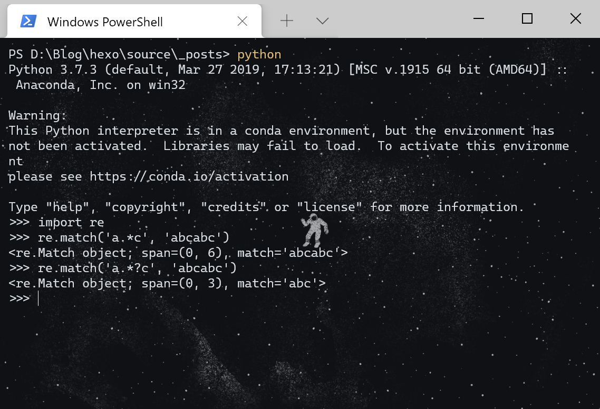

正则表达式
正则表达式是一个特殊的字符序列，它使用单个字符串来描述、匹配一系列匹配某个句法规则的字符序列，通常被用来检索、替换那些匹配某个模式的文本。
正则表达式是一种用来匹配字符串的强有力的武器。所以多用于字符校验，比如密码是否符合强度要求；校验电话号码或者邮箱是否合法等等。
正则表达式的大致匹配过程是：依次拿出表达式和文本中的字符比较，如果每一个字符都能匹配，则匹配成功；一旦有匹配不成功的字符则匹配失败。如果表达式中有量词或边界，这个过程会稍微有一些不同。
常用的正则元素：
| 模式 | 描述 |
|---|---|
| 一般字符 | 匹配自身 |
. |
匹配除了换行符之外的字符 |
\d |
数字 |
\D |
非数字，即\d的逆 [^\d] |
\s |
空白字符（空格、换行、制表等） |
\S |
非空白字符 |
\w |
单词字符 |
\W |
非单词字符 |
｜ |
左右任意匹配一个，先左后右 |
[] |
字符集，中括号内部既可以是单个字符如[abc]，也可以是字符范围如[0-3] |
() |
小括号内部表示一个整体作为一个分组，并且会依次赋予一个编号 |
{m,n} |
大括号表示前一个字符或者字符集和重复次数，包括m和n次 |
* |
匹配前一个字符0到无限次 |
+ |
匹配前一个字符1到无限次 |
? |
匹配前一个字符0次或者1次，问号加在{m,n},*,+,?这些数量词后面，可以变成非贪婪匹配 |
^ |
匹配开头 |
$ |
匹配结尾 |
除了上面一些常用的元素外，还有一些比较强大的分组用法，比如：
| 模式 | 描述 |
|---|---|
\number |
引用编号为<number>的分组所匹配到的字符串 |
(?=X) |
匹配的字符串的后面限制为X，如a(?=\d)匹配后面是数字的a |
(?!X) |
匹配的字符串的后面限制不为X，如a(?!\d)匹配后面不是数字的a |
(?<=X) |
匹配的字符串的前面有限制条件，如a(?<=\d)匹配前面是数字的a |
(?<!X) |
匹配的字符串的前面有限制条件，如a(?<=\d)匹配前面不是数字的a |
贪婪匹配与非贪婪匹配
贪婪匹配：贪婪匹配在匹配字符串时总是尝试匹配尽可能多的字符。
懒惰匹配：与贪婪匹配相反，懒惰匹配在匹配字符串时总是尝试匹配尽可能少的字符。
在python中默认使用的是贪婪匹配。
举个例子，一个字符串abcabc，正则表达式为a.*c，那么默认的贪婪匹配匹配到的结果为abcabc，非贪婪匹配的结果为abc
从贪婪匹配模式改成懒惰匹配也很简单，只要在表示次数的元素*、？、+、{m,n}后面加上？即可。

python正则
python中的re模块是python自带的处理正则表达式的库。
主要方法有
re.match()，re.search()，re.compile()，re.split()，re.findall()，re.finditer()等等
re.compile()
compile 函数用于编译正则表达式，生成一个正则表达式（ Pattern ）对象，供其他函数使用。
实际上compile函数返回一个正则表达式对象，和一般的类对象实例化过程不同的是，正则表达式对象只能通过compile函数生成。
re.match()
这个函数就可以通过类方法调用也可以通过正则表达式对象的实例方法调用。者方法会从字符串的起始位置匹配一个模式，如果不是起始位置匹配成功的话，match()就返回none。
匹配成功后，re.match方法返回一个匹配的对象，可以使用匹配对象的group()方法 来获取匹配到的字符串，也可以使用span()方法获取到匹配对象的位置。
re.search()
这个函数扫描整个字符串并返回第一个成功的匹配对象。
search和match的区别是：re.match 只匹配字符串的开始，如果字符串开始不符合正则表达式，则匹配失败，函数返回 None，而 re.search 匹配整个字符串，直到找到一个匹配。
re.findall()
search和match只会找出一个匹配结果，而很多情况下，我们需要找到所有匹配的结果，这时候就需要用findall方法。
该方法找到正则表达式所匹配的所有子串，并返回一个字符串列表，如果有多个匹配模式，则返回元组列表，如果没有找到匹配的，则返回空列表。
re.finditer()
在字符串中找到正则表达式所匹配的所有子串，不过返回的是一个迭代器。
re.split()
split 方法按照能够匹配的子串将字符串分割后返回列表，可以代替字符串的split方法。
Notice:
match(), search(), finditer()返回的都是匹配对象，匹配对象可以通过group方法和span方法获取到匹配的表达式和位置
findall()方法返回的是一个列表，里面只有匹配到的字符串。
正则原理与问题点
实现正则表达式引擎的有两种方式：DFA 自动机（Deterministic Final Automata 确定型有穷自动机）和 NFA 自动机（Non deterministic Finite Automaton 不确定型有穷自动机）。
DFA 自动机的时间复杂度是线性的，更加稳定，但是功能有限。
而 NFA 的时间复杂度比较不稳定，有时候很好，有时候不怎么好，好不好取决于你写的正则表达式，但是 NFA 的功能更加强大。
Python中使用的是NFA。
NFA自动机消耗输入符号的字符串。对每个输入符号它变换到一个新状态直到所有输入符号到被耗尽。整个过程比较复杂，这里不赘述，需要注意的是自动机的回溯过程。
匹配过程导致 CPU 使用率高的主要原因就是自动机的回溯过程。上文已经提到了正则匹配的贪婪模式，一般来说，贪婪匹配更容易发生回溯的问题。还有一种模式被称为独占模式，在表示次数的元素*、？、+、{m,n}后面加上+，匹配时会尽可能多的匹配，但是不回溯。如果写正则表达式的时候发现匹配时间久，CPU使用率长时间居高不下，可以试着分析是否是正则表达式写的有问题，导致的回溯过多。